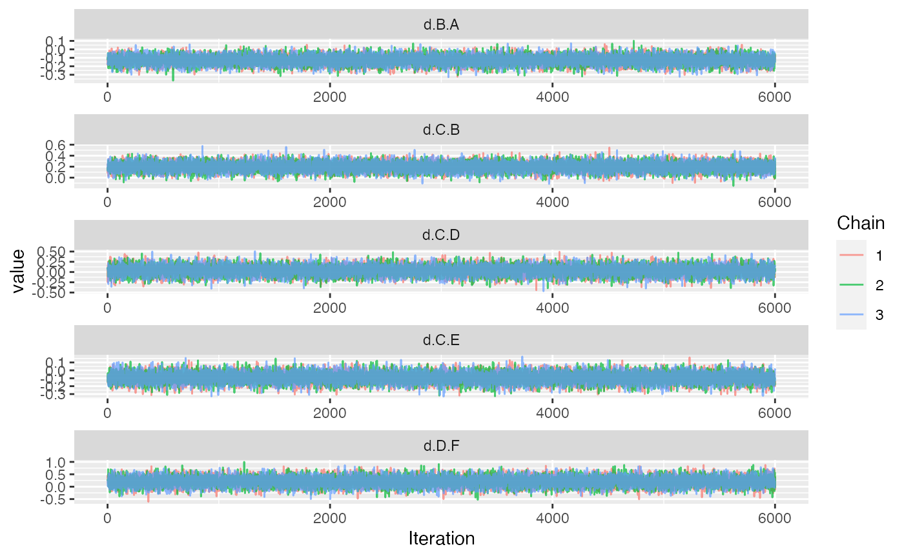
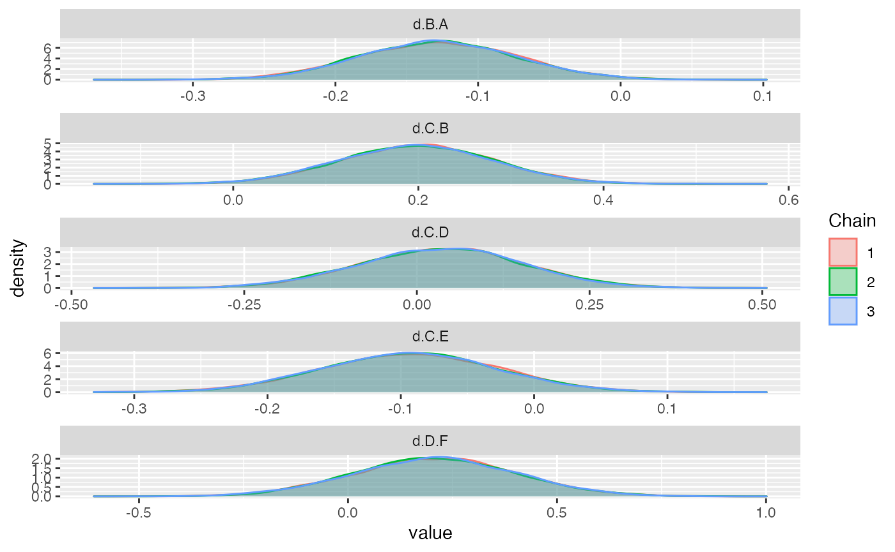
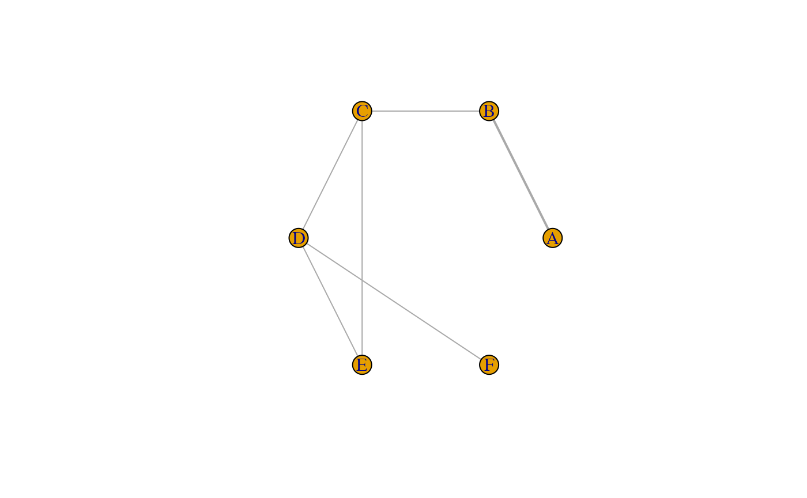
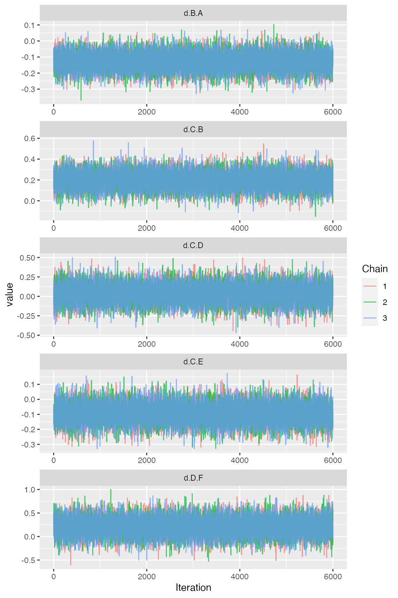
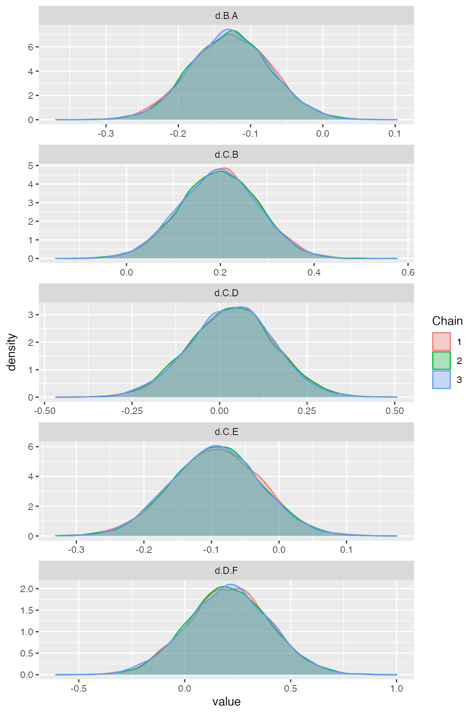
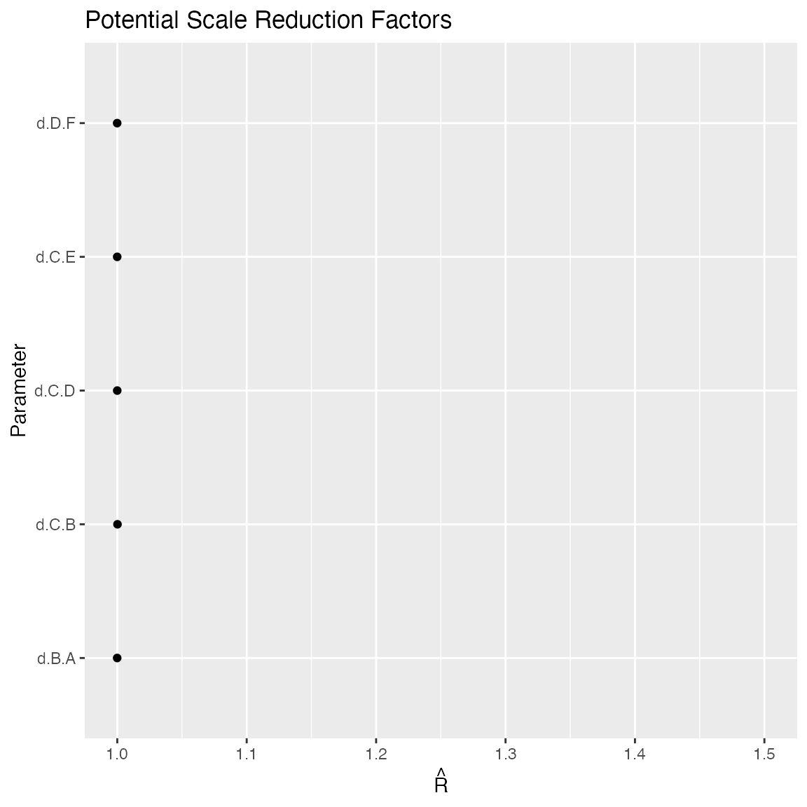
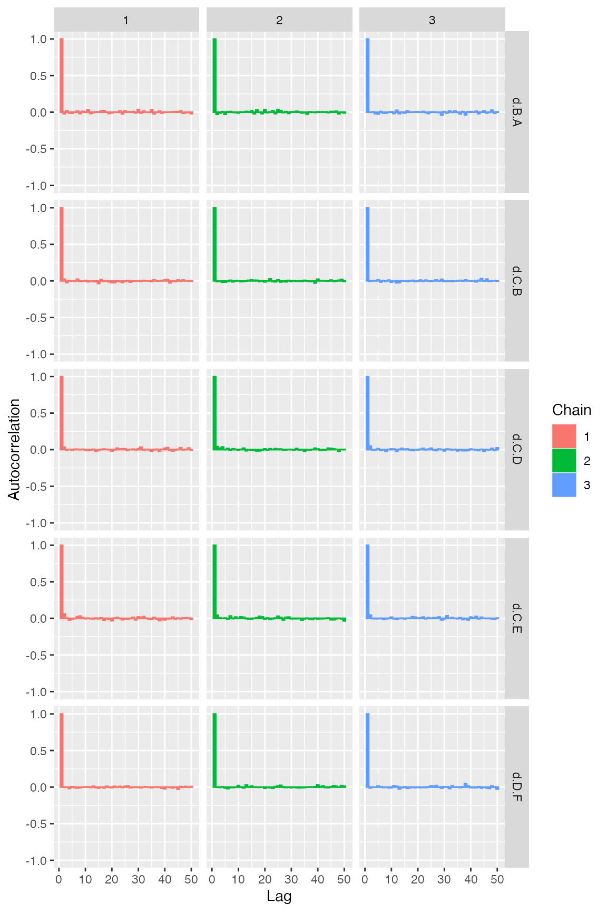
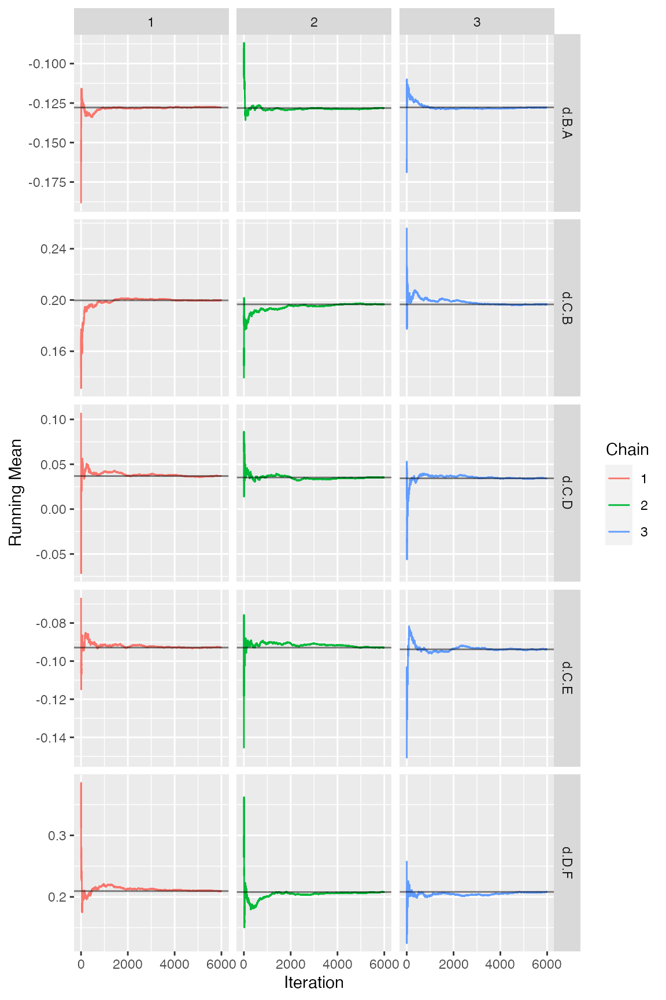
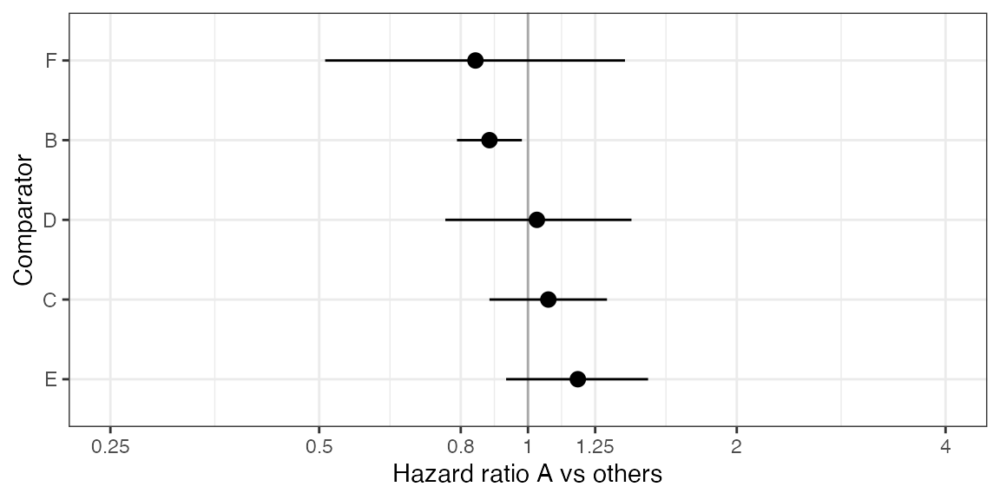
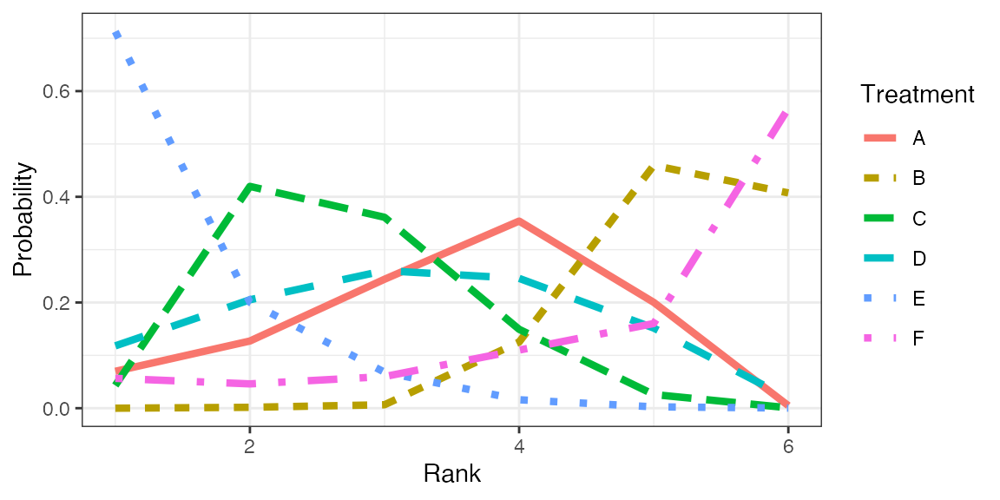

example-nma-hr-data.rmdThis vignette provides a short example of a Bayesian NMA for HR data. The model fit relies on the gemtc package, pre- and post-processing is done with gemtcPlus.
knitr::opts_chunk$set(echo = TRUE) library(dplyr) library(gemtc) library(gemtcPlus) library(ggmcmc)
# load example data data("hr_data", package = "gemtcPlus")
#Plan model model_plan <- plan_hr(bth.model = "FE", n.chain = 3, n.iter = 6000, thin = 1, n.adapt = 1000, link = "identity", linearModel = "fixed")
model <- nma_fit(model_input = model_input)
## Warning in (function (network, type = "consistency", factor = 2.5, n.chain =
## 4, : Likelihood can not be inferred. Defaulting to normal.## Warning in rjags::jags.model(file.model, data = syntax[["data"]], inits =
## syntax[["inits"]], : Unused variable "om.scale" in data## Compiling model graph
## Resolving undeclared variables
## Allocating nodes
## Graph information:
## Observed stochastic nodes: 7
## Unobserved stochastic nodes: 5
## Total graph size: 132
##
## Initializing modelggs_traceplot(ggs(model$samples))

ggs_density(ggs(model$samples))

summary(model)
##
## Results on the Mean Difference scale
##
## Iterations = 1:6000
## Thinning interval = 1
## Number of chains = 3
## Sample size per chain = 6000
##
## 1. Empirical mean and standard deviation for each variable,
## plus standard error of the mean:
##
## Mean SD Naive SE Time-series SE
## d.B.A -0.12792 0.05541 0.0004130 0.0004044
## d.C.B 0.19765 0.08313 0.0006196 0.0006196
## d.C.D 0.03549 0.12051 0.0008983 0.0009557
## d.C.E -0.09321 0.06649 0.0004956 0.0005243
## d.D.F 0.20852 0.19508 0.0014540 0.0014541
##
## 2. Quantiles for each variable:
##
## 2.5% 25% 50% 75% 97.5%
## d.B.A -0.23611 -0.16600 -0.12790 -0.09026 -0.01820
## d.C.B 0.03457 0.14126 0.19849 0.25451 0.35855
## d.C.D -0.20200 -0.04492 0.03748 0.11554 0.26981
## d.C.E -0.22370 -0.13805 -0.09306 -0.04824 0.03684
## d.D.F -0.17147 0.07815 0.20894 0.33972 0.59366
##
## -- Model fit (residual deviance):
##
## Dbar pD DIC
## 5.479850 4.978586 10.458436
##
## 7 data points, ratio 0.7828, I^2 = 0%plot(model_input$fitting_data)

get_mtc_sum(model)
## DIC pD resDev dataPoints
## 1 10.46 4.98 5.48 7Update model plan and re-run fit.
#Plan model model_plan <- plan_hr(bth.model = "RE", n.chain = 3, n.iter = 6000, thin = 1, n.adapt = 1000, link = "identity", linearModel = "random", bth.prior = mtc.hy.prior(type = "var", distr = "dlnorm",-4.18, 1 / 1.41 ^ 2) )
model <- nma_fit(model_input = model_input)
## Warning in (function (network, type = "consistency", factor = 2.5, n.chain =
## 4, : Likelihood can not be inferred. Defaulting to normal.## Warning in rjags::jags.model(file.model, data = syntax[["data"]], inits =
## syntax[["inits"]], : Unused variable "om.scale" in data## Compiling model graph
## Resolving undeclared variables
## Allocating nodes
## Graph information:
## Observed stochastic nodes: 7
## Unobserved stochastic nodes: 5
## Total graph size: 132
##
## Initializing modelThe ggmcmc package provides ggplot2 versions of all major convergence plots and diagnostics.
Figure Traceplot
ggs_traceplot(ggs(model$samples))

Figure Densityplot
ggs_density(ggs(model$samples))

Figure Brooks-Gelman-Rubin convergence diagnostic (Rhat)

Figure Auto-correlation plot
ggs_autocorrelation(ggs(model$samples))

Figure Running means
ggs_running(ggs(model$samples))

The contrasts in this model are log-hazard ratios (which correspond to differences in log-hazard rates).
Unfortunately, gemtc does not provide an estimate of the effective sample size (n.eff). Instead, a time-series SE is given. As a rule of thumb, the length of the MCMC is sufficient if the time-series SE is smaller than 2%(-5%) of the posterior SD.
summary(model)
##
## Results on the Mean Difference scale
##
## Iterations = 1:6000
## Thinning interval = 1
## Number of chains = 3
## Sample size per chain = 6000
##
## 1. Empirical mean and standard deviation for each variable,
## plus standard error of the mean:
##
## Mean SD Naive SE Time-series SE
## d.B.A -0.12792 0.05541 0.0004130 0.0004044
## d.C.B 0.19765 0.08313 0.0006196 0.0006196
## d.C.D 0.03549 0.12051 0.0008983 0.0009557
## d.C.E -0.09321 0.06649 0.0004956 0.0005243
## d.D.F 0.20852 0.19508 0.0014540 0.0014541
##
## 2. Quantiles for each variable:
##
## 2.5% 25% 50% 75% 97.5%
## d.B.A -0.23611 -0.16600 -0.12790 -0.09026 -0.01820
## d.C.B 0.03457 0.14126 0.19849 0.25451 0.35855
## d.C.D -0.20200 -0.04492 0.03748 0.11554 0.26981
## d.C.E -0.22370 -0.13805 -0.09306 -0.04824 0.03684
## d.D.F -0.17147 0.07815 0.20894 0.33972 0.59366
##
## -- Model fit (residual deviance):
##
## Dbar pD DIC
## 5.479850 4.978586 10.458436
##
## 7 data points, ratio 0.7828, I^2 = 0%In the example here, the chain length seems borderline (sufficient for posterior means and medians, but rather a bit too small for stable 95% credible intervals).
To judge overall model fit, the residual deviance should be compared to the number of independent data points (which can be done via a small utility function in gemtcPlus).
get_mtc_sum(model)
## DIC pD resDev dataPoints
## 1 10.46 4.98 5.48 7Assume new treatment is “A” and is to be compared vs all other treatments.
Table Hazard ratios A vs other treatments
HR <- get_mtc_newVsAll(model, new.lab = "A", transform = "exp", digits = 2) HR
## Comparator Med CIlo CIup
## 1 B 0.88 0.79 0.98
## 2 C 1.07 0.88 1.30
## 3 D 1.03 0.76 1.41
## 4 E 1.18 0.93 1.49
## 5 F 0.84 0.51 1.38Table Probability A better than other treatments (better meaning smaller HR)
get_mtc_probBetter(model, new.lab = "A", smaller.is.better = TRUE, sort.by = "effect")
## New Comparator probNewBetter
## 1 A B 0.990
## 5 A F 0.757
## 3 A D 0.415
## 2 A C 0.245
## 4 A E 0.091Figure Forest plot A vs other treatments
plot_mtc_forest(x = HR, lab = "Hazard ratio A vs others", sort.by = "effect")

Table Cross-tabulation of HRs
ctab <- round(exp(relative.effect.table(model)), 2) pander::pandoc.table(as.data.frame(ctab), split.tables = Inf)
| A | B | C | D | E | F | |
|---|---|---|---|---|---|---|
| A | A | 1.14 (1.02, 1.27) | 0.93 (0.77, 1.13) | 0.97 (0.71, 1.31) | 0.85 (0.67, 1.08) | 1.19 (0.72, 1.95) |
| B | 0.88 (0.79, 0.98) | B | 0.82 (0.7, 0.97) | 0.85 (0.64, 1.13) | 0.75 (0.61, 0.92) | 1.05 (0.65, 1.69) |
| C | 1.07 (0.88, 1.3) | 1.22 (1.04, 1.43) | C | 1.04 (0.82, 1.31) | 0.91 (0.8, 1.04) | 1.28 (0.81, 1.99) |
| D | 1.03 (0.76, 1.41) | 1.18 (0.88, 1.57) | 0.96 (0.76, 1.22) | D | 0.88 (0.69, 1.12) | 1.23 (0.84, 1.81) |
| E | 1.18 (0.93, 1.49) | 1.34 (1.08, 1.65) | 1.1 (0.96, 1.25) | 1.14 (0.89, 1.45) | E | 1.4 (0.89, 2.21) |
| F | 0.84 (0.51, 1.38) | 0.95 (0.59, 1.55) | 0.78 (0.5, 1.23) | 0.81 (0.55, 1.19) | 0.71 (0.45, 1.12) | F |
rk <- rank.probability(model, preferredDirection = -1) mrk <- reshape2::melt(rk[,], varnames = c("Treatment", "Rank"), value.name = "Probability") fig <- ggplot(data = mrk) + geom_line(aes(Rank, Probability, color = Treatment, linetype = Treatment), size = 1.5) + theme_bw()
Figure Rankogram
plot(fig)

Table Rank probabilities
## Rank probability; preferred direction = -1
## Rank 1 Rank 2 Rank 3 Rank 4 Rank 5 Rank 6
## A 0.06977778 0.127111111 0.24400000 0.35405556 0.200277778 0.0047777778
## B 0.00000000 0.001666667 0.00650000 0.12511111 0.459388889 0.4073333333
## C 0.04305556 0.419722222 0.36127778 0.14927778 0.025888889 0.0007777778
## D 0.11794444 0.205166667 0.26027778 0.24566667 0.151666667 0.0192777778
## E 0.71277778 0.200333333 0.06811111 0.01594444 0.002555556 0.0002777778
## F 0.05644444 0.046000000 0.05983333 0.10994444 0.160222222 0.5675555556cat(model$model$code)
## model {
## # Likelihood for arm-based data
## ## OMITTED
## # Likelihood for contrast-based data (univariate for 2-arm trials)
## for(i in studies.r2) {
## for (k in 2:na[i]) {
## mest[i, k] <- delta[i, k]
## }
## m[i, 2] ~ dnorm(mest[i, 2], prec[i, 2])
## prec[i, 2] <- 1 / (e[i, 2] * e[i, 2])
##
## dev[i, 1] <- pow(m[i, 2] - mest[i, 2], 2) * prec[i, 2]
## }
## # Likelihood for contrast-based data (multivariate for multi-arm trials)
## ## OMITTED
##
## # Fixed effect model
## for (i in studies) {
## delta[i, 1] <- 0
## for (k in 2:na[i]) {
## delta[i, k] <- d[t[i, 1], t[i, k]]
## }
## }
##
## # Relative effect matrix
## d[1, 1] <- 0
## d[1, 2] <- -d.B.A
## d[1, 3] <- -d.B.A + -d.C.B
## d[1, 4] <- -d.B.A + -d.C.B + d.C.D
## d[1, 5] <- -d.B.A + -d.C.B + d.C.E
## d[1, 6] <- -d.B.A + -d.C.B + d.C.D + d.D.F
## for (i in 2:nt) {
## for (j in 1:nt) {
## d[i, j] <- d[1, j] - d[1, i]
## }
## }
##
## prior.prec <- pow(re.prior.sd, -2)
##
## # Study baseline priors
## ## OMITTED
##
## # Effect parameter priors
## d.B.A ~ dnorm(0, prior.prec)
## d.C.B ~ dnorm(0, prior.prec)
## d.C.D ~ dnorm(0, prior.prec)
## d.C.E ~ dnorm(0, prior.prec)
## d.D.F ~ dnorm(0, prior.prec)
##
## }BEE repository: /home/bceuser/benneti1/Global-HTA-Evidence-Open/Rpackages/gemtcPlus/vignettes
date()## [1] "Thu Oct 22 18:32:24 2020"## R version 3.6.3 (2020-02-29)
## Platform: x86_64-pc-linux-gnu (64-bit)
## Running under: Red Hat Enterprise Linux
##
## Matrix products: default
## BLAS/LAPACK: /usr/lib64/libopenblas-r0.3.3.so
##
## locale:
## [1] LC_CTYPE=en_US.UTF-8 LC_NUMERIC=C
## [3] LC_TIME=en_US.UTF-8 LC_COLLATE=en_US.UTF-8
## [5] LC_MONETARY=en_US.UTF-8 LC_MESSAGES=en_US.UTF-8
## [7] LC_PAPER=en_US.UTF-8 LC_NAME=C
## [9] LC_ADDRESS=C LC_TELEPHONE=C
## [11] LC_MEASUREMENT=en_US.UTF-8 LC_IDENTIFICATION=C
##
## attached base packages:
## [1] stats graphics grDevices utils datasets methods base
##
## other attached packages:
## [1] ggmcmc_1.5.0 ggplot2_3.3.2 tidyr_1.1.2 gemtcPlus_1.0.0
## [5] R2jags_0.6-1 rjags_4-10 gemtc_0.8-7 coda_0.19-4
## [9] dplyr_1.0.2
##
## loaded via a namespace (and not attached):
## [1] Rcpp_1.0.5 lattice_0.20-41 assertthat_0.2.1 rprojroot_1.3-2
## [5] digest_0.6.26 truncnorm_1.0-8 R6_2.4.1 plyr_1.8.6
## [9] backports_1.1.10 evaluate_0.14 pillar_1.4.6 rlang_0.4.8
## [13] rstudioapi_0.11 minqa_1.2.4 nloptr_1.2.2.2 Matrix_1.2-18
## [17] rmarkdown_2.5 pkgdown_1.5.1 desc_1.2.0 labeling_0.4.2
## [21] splines_3.6.3 lme4_1.1-23 statmod_1.4.35 stringr_1.4.0
## [25] pander_0.6.3 igraph_1.2.6 munsell_0.5.0 compiler_3.6.3
## [29] xfun_0.18 pkgconfig_2.0.3 htmltools_0.5.0 tidyselect_1.1.0
## [33] tibble_3.0.4 R2WinBUGS_2.1-21 reshape_0.8.8 crayon_1.3.4
## [37] withr_2.3.0 MASS_7.3-51.6 grid_3.6.3 nlme_3.1-148
## [41] meta_4.15-1 GGally_2.0.0 gtable_0.3.0 lifecycle_0.2.0
## [45] magrittr_1.5 metafor_2.4-0 scales_1.1.1 stringi_1.5.3
## [49] reshape2_1.4.4 farver_2.0.3 fs_1.5.0 xml2_1.3.2
## [53] ellipsis_0.3.1 generics_0.0.2 vctrs_0.3.4 boot_1.3-25
## [57] RColorBrewer_1.1-2 tools_3.6.3 forcats_0.5.0 CompQuadForm_1.4.3
## [61] glue_1.4.2 purrr_0.3.4 network_1.16.1 abind_1.4-5
## [65] parallel_3.6.3 yaml_2.2.1 colorspace_1.4-1 memoise_1.1.0
## [69] knitr_1.30